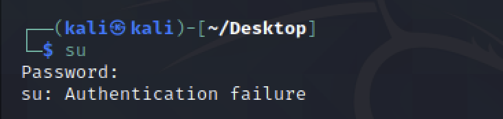
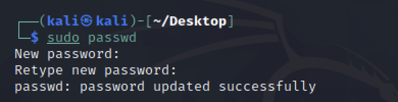
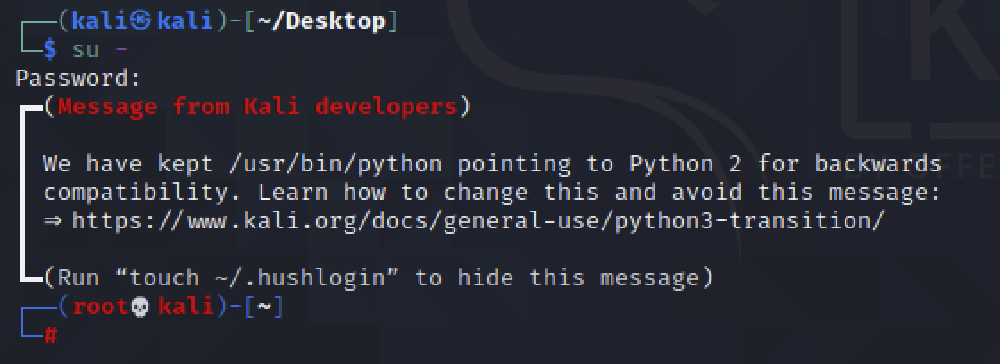

kali Linux 2020 version를 virtualBox에 구동 후
root (su) 계정 접속되지 않는 문제.
kali Linux 초기 계정은 kali이고 password는 계정과 동일하게 kali 이다.
su 접속 시 패스워드가 kali 일 것이라고 생각해서 kali를 입력했는데
su: Authentication failure 메시지가 발생하며 접속이 되지 않았다.

그래서 그냥..
root 계정에 대해 패스워드를 설정했다.
sudo passwd 명령어를 사용하여 root 계정에 password 설정이 가능하다.
[sudo] password for kali: 에 kali 계정의 패스워드 kali를 입력.

New password:
Retype new passowrd:
에 설정하고자 하는 root 계정의 패스워드를 입력해 준다.
그럼 설정 끝 !

그럼 이제 다시.. su - 를 입력하고,
Password: 입력창에 위에서 설정한 root 계정의 패스워드를 입력한다.
kali@kali 가 root@kali로 바뀐 것을 확인 할 수 있다.